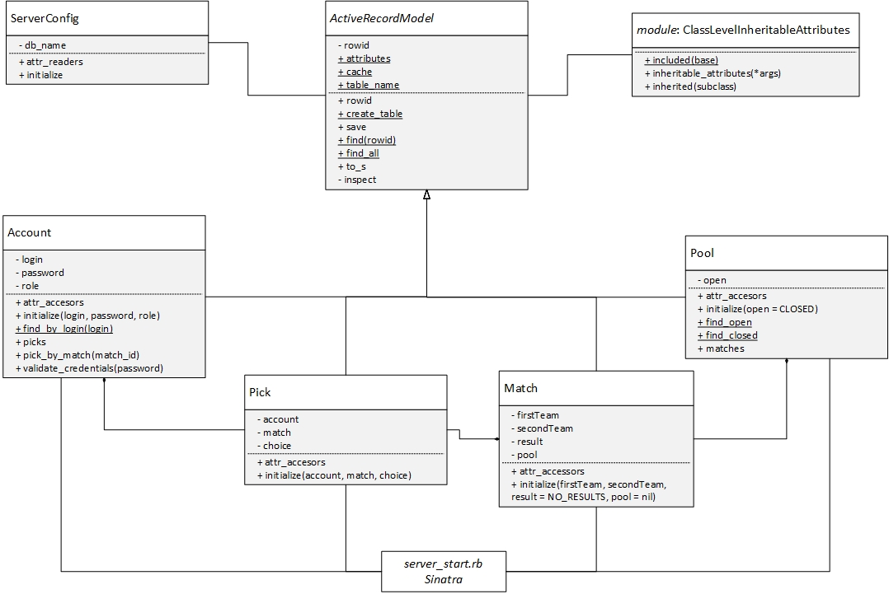
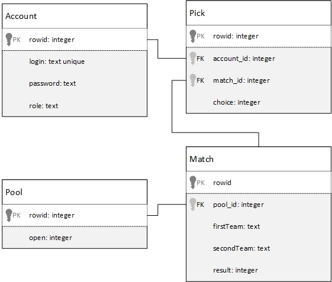

Application Design and Architecture¶ ↑
- Authors
-
Daniela Ortiz Rodríguez & Mauricio Cunillé Blando
- Date
-
November 30, 2015
The directory structure for the application and its documentation is as follows:
SoccerPool/
├─ doc/ Folder produced by RDoc.
└─ src/ Folder for the application's source code.
├─ public/ Folder for the server's public documents.
│ └─ css/ Folder for the application's CSS files.
│ └─ bootstrap-3.3.6-dist/ Folder for the application's bootstrap files.
│ └─ images/ Folder for the application's images.
│ └─ jquery-1.9.1/ Folder for the application's jquery files.
├─ models/ Folder for the application's models.
└─ views/ Folder for the application's views (ERB files).
This is the command used to produce this documentation (running it from the
SoccerPool directory):
rdoc --exclude ".json|.css|.js|.svg" src
The root of the documentation should now be available at:
SoccerPool/doc/index.html
Installing and Running the Application¶ ↑
To run the SoccerPool web server you only need to type the
following command at the terminal from the SoccerPool/src
directory:
ruby server_start.rb
Afterwards, point your web brower at the following URL: [localhost:4567]
Please note that you need to install the following packages to your system:
sudo apt-get install ruby-dev ruby-sqlite3 ruby-sinatra ri2.1 sudo gem install sinatra-contrib
Class Diagrams¶ ↑
The following figure represents the UML class diagram for the
SoccerPool model and its classes:

Entity Relationship Diagram¶ ↑
The following figure represents the Entity Relationship diagram for the
SoccerPool database:

Deployment Diagram¶ ↑
UML deployment diagrams show a system's physical layout, revealing which pieces of software run on what pieces of hardware. This is the deployment diagram for our application:

Patterns Used¶ ↑
-
Active Record :
We use the active record pattern in order to do and object-relational
mapping and access to the SQLite database. The Account class
is an active record model representing a row in the accounts table. The
ActiveRecordModel is an active record template representing a
row in it's child table. It has all the needed information for managing
a table, inserting and updating objects and getting records. The
Pool class is an active record representing a row in the pools
table. The Pick class is an active record representing a row
in the picks table. The Match class is an active record
representing a row in the matches table.
-
Domain-Specific Language:
The server_start.rb file consists of a series of Sinatra
routes. Sinatra is a DSL for creating web applications in Ruby.
-
Model-View-Controller:
The application follows the classical web implementation of the MVC
architectural pattern. The models (.rb files) and views
(.erb files) are stored in the corresponding
models and views directories. The controllers can
be found on the server_start.rb file since we aren't using
a modular implementation of Sinatra.
-
Metaprogramming :
The ActiveRecordModel class uses ruby's metaprogramming in
order to achieve its active record functionallity. It overrides the
attr_accesor method and stores a list of the attributes being defined on
the child class. These attributes are then used to create the database
table. The update method also uses metaprogramming in order to access the
instance variables and their values. Metaprogramming is what makes the
ActiveRecordModel class generic.
-
Singleton :
The server_config.rb file has a class ServerConfig that is a singleton class
representing the server configuration. It mostly includes the database name
used in the ActiveRecordModel class.
-
Iterator :
This pattern is used every time we iterate on an array of variables. It is
also used on the find methods in the active record pattern as
a helper to the strategy pattern for building an instance of the
child's object.
-
Strategy :
The strategy pattern is used briefly while getting elements through the
active record pattern. Since the ActiveRecordModel class is
generic, it doesn't know how to build the instances of the objects
being returned by the database. We use the strategy pattern in order to
provide the block capable of translating a table row into an instance of
the desired class.
-
Template :
The ActiveRecordModel is a template that is used through
inheritance. Once a class inherits from it and implements the desired
methods, the class is capable of behaving as an active record model.
-
Convention over configuration :
We briefly use convention over configuration when defining the attributes
inside an ActiveRecordModel sub-class. Since the create_table
method needs information such as column type and constraints, the
attr_accesor method was overriden and instead of using a symbol, a
dictionary must be provided to define an attribute. The dictionary is
defined as {symbol => column_attributes} where the column_attributes can
define from “text” datatype to a special “foreignkey@table_name” that is
translated to the respective constraint.
Acknowledgments¶ ↑
To Ariel Ortiz for being such an excellent professor.
References¶ ↑
Mention here any consulted books or web resources. Examples:
-
J. Nunemaker Rails Tips 2008. Available through {www.railstips.org/blog/archives/2006/11/18/class-and-instance-variables-in-ruby/}
-
Ruby-Doc.org. RDoc Markup Reference. http://ruby-doc.org/stdlib-2.2.3/libdoc/rdoc/rdoc/RDoc/Markup.html Accessed November 28, 2015.